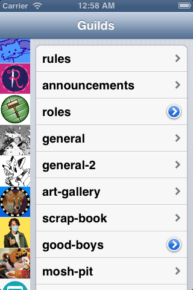

Discord Classic ('raspberry')
What if Discord were around in 2012? This silly project set out to answer just that. It's a Discord client that runs on the old iPod collecting dust in your drawer. It's pretty barebones, lacking even basic features like push notifications, starting DMs, and user mentioning, but its functional! The project also demonstrates how old devices could still be useful if it weren't for planned obsolescence.
